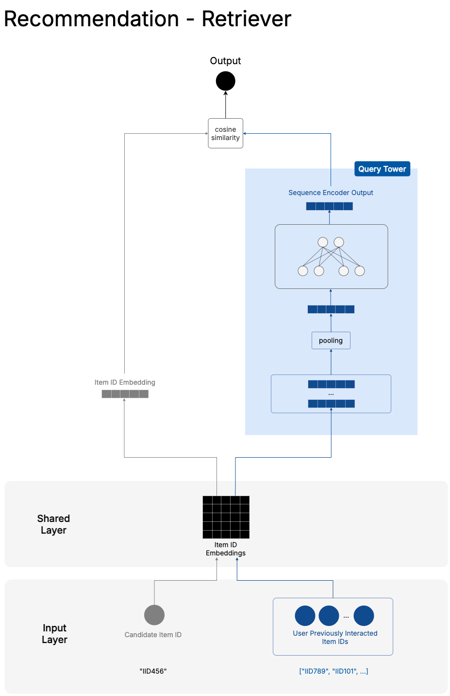
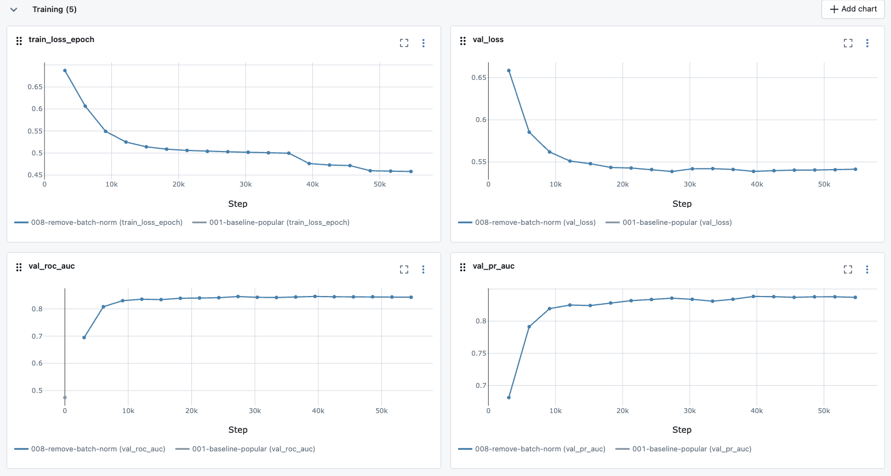
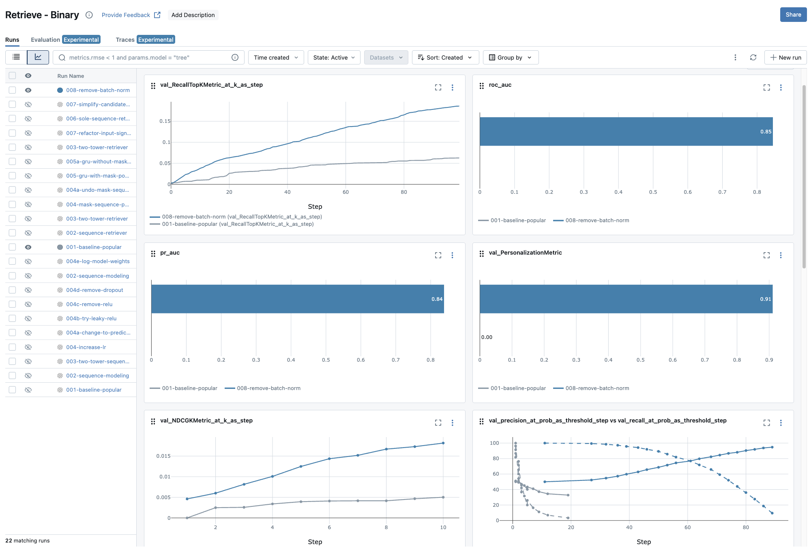

This is the fifth chapter of the tutorial series: Implement a RecSys.
Introduction
In Chapter 4, we established our evaluation framework, implemented MLflow experiment tracking, and built a popularity-based baseline model. Since our baseline is simple, it treats all users the same way—everyone gets the same popular items regardless of their personal browsing history or preferences.
This chapter marks the transition from simple heuristics to a more sophisticated machine learning aimed towards personalization. I will discuss the rationales and my thinkings about recommendation system and model design encompassing our sequence-based recommendation models that understand the temporal patterns in user behavior. Instead of just knowing that a user liked certain books, our model will learn to recognize that someone who browses “Python Programming” followed by “Machine Learning” might be interested in “Deep Learning with PyTorch” next.
This is going to be a long post. So grab your coffee, and let’s dive in.
All code for this chapter is available in the notebooks/011-sequence-modeling.ipynb file and the src/sequence/ directory in the project repository.
Throughout the series I would be using sequence modeling and session-based recommendation interchangeably to refer to the same technique of modeling user’s behavior based on their sequential interactions.
Why Sequence Modeling Matters in Recommendations
Traditional collaborative filtering approaches treat user preferences as static snapshots. They might know that User A liked Items 1, 3, and 7, but they miss the story hidden in the order and timing of these interactions.
Consider these two users with identical item preferences but different behavioral patterns:
User A: Book1 → Book2 → Book3 → Book4 → Book5
User B: Book5 → Book1 → Book4 → Book2 → Book3Both users interacted with the same five books, but their sequences tell very different stories. User A might be following a structured learning path (beginner to advanced), while User B might be jumping between topics based on immediate curiosity. Traditional collaborative filtering would treat these users identically, but sequence models can capture these nuanced patterns.
But there’s something even more compelling about this modeling approach. It gives you two very strong arguments to argue with: real-time adaptation and cold start handling.
Think about what happens in a static recommendation systems when a new user signs up. They get the same boring popular items everyone else sees. “Here are the top 10 books everyone’s reading!” It’s like walking into a bookstore and having the clerk hand you a list without asking what you’re interested in. The user has to suffer through generic recommendations until the system has enough data about them. This is the cold start problem, which is, trust me, a real typical ask your Product Manager would come up during your recommendation model pitch.
Our sequence model flips this on its head. The moment a new user clicks on their first book, the model springs into action. They browse “Python Programming,” then click on “Machine Learning Basics”—the model immediately understands they’re on a learning journey. No waiting. No generic recommendations. The system starts personalizing from interaction number one.
This happens because our model doesn’t need to know who you are. It mostly needs to know what you’re doing. Traditional collaborative filtering methods like Matrix Factorization, while also leaning on user interaction data, normally provides user embedding that captures stable preferences over time. The sequence representation captures what’s happening right now. This is largely debateable, but in a lot of the settings “right now” is often more important than “over time” for making the next recommendation1.
And the model keeps learning as users interact. When someone adds a third book to their sequence, the recommendations get sharper. A fourth book makes them sharper still. It’s like having a shop assistant who gets better at helping you the longer you browse. And all of this happens without retraining the model or updating any databases.
This real-time adaptation solves one of the biggest problems in recommendation systems: how do you stay relevant when user interests change quickly? Traditional collaborative filtering models need to be retrained to pick up new patterns. Our sequence model adapts immediately. If thriller readers suddenly start buying romance novels (maybe it’s Valentine’s Day), the model notices the shift in the very next recommendation request.
Sequence Modeling Approaches
The central challenge in sequence modeling boils down to one question: how do you take a bunch of user interactions and turn them into something useful for predictions? You have a sequence like “Book A → Book B → Book C” and somehow need to compress all that information into a representation that captures what the user is really interested in.
I like to think of this as a “pooling” problem. You’re pooling information from multiple items into a single representation. It’s like trying to summarize a conversation—you want to keep the important bits and throw away the noise.
The simplest pooling method is averaging. But wait, you might think, average what exactly? We’re talking about sequences of item IDs that users clicked on. You can’t just average “book_123” and “book_456” like they’re numbers, right?
This is where embeddings become your best friend. Here’s the key insight: every item in your catalog gets converted into a vector of numbers before any learning happens. Instead of working with raw item IDs, your model works with these dense numerical representations. It’s the same trick that made Word2Vec so powerful—remember from Chapter 3 how it could tell you that “king” minus “man” plus “woman” equals “queen”2? That magic happens because words become vectors, and vectors can be manipulated mathematically.
So when we talk about averaging a sequence, we’re actually averaging the embedding vectors of the items in that sequence. Book A becomes a 128-dimensional vector, Book B becomes another 128-dimensional vector, and averaging them gives you a single 128-dimensional vector that somehow captures the essence of “someone who reads both Book A and Book B.”
The beautiful thing about embeddings, just like in ML in general, is that they can start random but learn to be meaningful. During training, the model adjusts these vectors so that similar items end up close together in the embedding space. Books about Python programming cluster together, romance novels form their own neighborhood, and so on.
Now, averaging is wonderfully simple, and sometimes simplicity wins. I’ve seen myself trying other pooling methods only to discover that good old averaging works just as well. But that doesn’t mean you shouldn’t experiment. Some sequences have patterns that averaging destroys—like the difference between reading “Beginner Python → Advanced Python” versus “Advanced Python → Beginner Python”.
This is where more sophisticated pooling methods come in. The field of sequence modeling offers several architectural choices, each with its own strengths and trade-offs. The simplest approach uses Recurrent Neural Networks (RNNs), which process sequences step by step, maintaining a hidden state that captures information from previous steps. Think of an RNN as reading a book one page at a time, trying to remember everything important from earlier pages. While this sounds intuitive, vanilla RNNs have a memory problem—they forget important details from way back in the sequence, what researchers call the vanishing gradient problem.
To fix this memory issue, researchers developed Long Short-Term Memory (LSTM) and Gated Recurrent Unit (GRU) networks. These use clever gating mechanisms to decide what to remember and what to forget. GRUs, in particular, have become the go-to choice for recommendation systems. They’re simpler than LSTMs but perform just as well—like getting 90% of the benefit with 60% of the complexity.
More recently, Transformer models have taken the field by storm. Instead of processing sequences step by step, they use self-attention mechanisms to look at all parts of the sequence simultaneously. It’s like being able to read an entire book at once and instantly connect themes from chapter 1 to chapter 20. Transformers are incredibly powerful for capturing long-range dependencies, but there’s a catch—they can be computationally expensive, especially when you have thousands or millions of items in your catalog.
Retrieval vs Ranking
When discussing recommendation system modeling approaches, it’s unrealistic if we don’t talk about retrieval and ranking, as most real-world systems are designed according to this two-phase approach.
While the main task is still to rank the most relevant and likely-to-be-interacted items on top, in reality it’s not uncommon that we need to deal with ranking for millions of items. Training a scoring model that takes into account each instance of <user, context, item> and uses it from the start is not feasible because of latency constraints. Calling that model to give fine-grained scores to all millions of items would take forever, and neither our users have that kind of patience nor do we as engineers find that idea sane.
The Two-Phase Architecture
To deal with this problem, we break the whole ranking process into two phases: first we quickly retrieve a shortlist of candidates from millions of items, then we use a fine-grained ranker to give the final ranking on the shortlist.
The difference in naming between these two phases already reveals their distinct characteristics. The retrieval phase needs to quickly scan millions of items to find about 1,000 potential candidates in milliseconds. This speed requirement means it cannot use complex input features and often needs to leverage indexing structures like vector databases for fast similarity search. The focus here is on recall—ensuring that relevant items make it into the candidate set, even if the initial scoring isn’t perfect.
The ranking phase operates under very different constraints. With bandwidth and a much more limited scope of hundreds to thousands of items, it can afford to adopt many more signals and complex features into its model. This phase delivers much better fine-grained scores for final ordering, focusing on precision—getting the order exactly right among the candidates that have already been deemed potentially relevant.
Retrieval as a Standalone System
One important thing to note: most of the time the retrieval phase gives back candidates with their own scores, which indicates to some extent how well the candidates match the query. Since they are scores, we can already use them to rank the candidates and provide recommendations to users.
This allows us to approach building recommendation systems in an incremental manner. In most of my RecSys projects, I start with building and deploying the retrieval model as the first version. The idea is to get both early impact and actual feedback from users interacting with our recommendations. This user feedback becomes a much better source of labeling signals to train our later ranking model on.
This approach offers several advantages. First, you get a working system deployed quickly, enabling faster time to impact rather than waiting months to build a complex multi-stage system. More importantly, you start collecting actual interaction data from users engaging with your recommendations, rather than relying solely on historical patterns. This real user feedback becomes invaluable—it’s a much richer source of labeling signals for training your later ranking model than any offline evaluation could provide.
Finally, it allows you to build the serving and monitoring infrastructure in phases, learning how to handle recommendation traffic, monitor model performance, and debug issues at a manageable scale before introducing the additional complexity of a ranking layer.
Our Two-Tower Retriever
In that spirit, the implementation of our sequential recommendation model in this series is a retrieval-based one. It follows a typical Two Tower architecture, where the query tower embeds information about the user and context—in our case, the user’s sequence of interactions—while the candidate tower represents the candidate items.
This separation is crucial for efficient serving. The candidate tower can precompute embeddings for all items and store them in a vector index. The query tower only needs to run at request time to generate the user’s current context embedding.

Training Setup
The labels for training come from our preparation in previous chapters. We create positive instances from <user, context, item> tuples which have actual interaction records in the past, while negative examples are sampled from the unseen item space for each user-context pair. This creates a binary classification problem where the model learns to distinguish between items a user would interact with versus items they would ignore.
Serving Architecture
For serving, our retrieval system works in two phases. First, in an offline process, we index all candidate item embeddings in a nearest neighbor vector search system. Then, during online serving, we send the <user, context> as input to the query tower to get a query embedding vector, use similarity lookup to search for the nearest candidate neighbors in the index, and return the corresponding items with their similarity scores.
This architecture enables sub-100ms response times even when searching through millions of items, making it practical for recommendation serving.
Again, the beauty of this approach is that it’s both a complete recommendation system on its own and a foundation for more sophisticated ranking models. You can deploy it immediately to start serving personalized recommendations, then later add a ranking layer on top without changing the underlying retrieval infrastructure.
Model Implementation
Now let’s translate the two-tower architecture into concrete code. But first, let me explain a key design decision that shapes our implementation.
The Case for Session-Only Models
Traditional two-tower retrievers include both user embeddings and sequence representations in the query tower. But I’ve chosen to build what I call a “SoleSequenceRetriever”—a model that relies entirely on the sequence of interactions, without any user-specific embeddings.
This isn’t just a technical choice; it’s a strategic one3 that fundamentally changes how the model behaves. By removing user embeddings, we’re making a bet that the sequence itself contains enough signal to make good recommendations. A user browsing “Python Programming → Machine Learning → Data Analysis” tells us more about their immediate intent than knowing they’re “User #47832” with some historical preference profile.
This approach solves several practical problems. New users get meaningful recommendations from their very first interaction—no cold start period where they see generic popular items. The model becomes more adaptive to changing interests since it’s not anchored to historical user preferences. And operationally, serving becomes simpler since we don’t need to manage user embedding lookups or worry about user ID mapping issues.
The trade-off, of course, is that we lose the ability to capture stable, long-term user preferences that might not be evident in a short session. But for the purpose of this project and the fact that we can always extend the model later, this trade-off is worth it.
Core Architecture
With that context, let’s look at our implementation. The core is simple and straightforward.
src/sequence/model.py
class SoleSequenceRetriever(BaseSequenceRetriever):
def __init__(
self,
num_items: int,
embedding_dim: int,
pooling_method: str = "mean",
dropout: float = 0.2,
mask_pooling: bool = True,
):
self.num_items = num_items
self.embedding_dim = embedding_dim
self.pooling_method = pooling_method.lower()
self.mask_pooling = mask_pooling
if item_embedding is None:
self.item_embedding = nn.Embedding(
num_items + 1, # extra index for unknown/padding
embedding_dim,
padding_idx=num_items,
)
else:
self.item_embedding = item_embedding
if self.pooling_method == "gru":
self.gru = nn.GRU(embedding_dim, embedding_dim, batch_first=True)
elif self.pooling_method == "mean":
self.gru = None
else:
raise ValueError("Invalid pooling_method. Choose 'gru' or 'mean'.")
self.query_fc = nn.Sequential(
nn.Linear(embedding_dim, embedding_dim),
nn.BatchNorm1d(embedding_dim),
nn.Dropout(dropout),
)- 1
- We support pre-trained item embeddings, which can be useful if you have embeddings from other models or external sources.
The architecture reflects our key principles. The item embedding layer converts raw item IDs into dense vectors that can capture semantic relationships. The configurable pooling method (mean or GRU) aggregates the sequence into a single representation. The query fully connected layer adds learning capacity while batch normalization and dropout help with generalization.
Notice what’s not here: any mention of user IDs. The model’s query tower depends entirely on the sequence of items, making it truly session-based.
Our base class supports both mean pooling and GRU-based pooling for sequence aggregation, making this configurable at training time. This flexibility allows us to experiment with different approaches to combining sequence information without changing the core architecture.
Model Training
The forward pass computes cosine similarity between the query embedding (pooled sequence representation) and candidate embedding, scaled to [0,1] to match our binary labels. This choice of cosine similarity isn’t arbitrary—it aligns with how we’ll serve the model using nearest neighbor search in production, i.e. we perform the exact same similarity computation, just against pre-indexed candidate embeddings rather than individual examples.
src/sequence/model.py
class SoleSequenceRetriever(BaseSequenceRetriever):
# ...
def get_query_embeddings(self, inputs: Dict[str, torch.Tensor]) -> torch.Tensor:
item_seq = inputs.get("item_seq")
if item_seq is None:
raise ValueError("Missing required input key: 'item_seq'")
item_seq = self.replace_neg_one_with_padding(item_seq)
mask = item_seq != self.item_embedding.padding_idx
seq_embeds = self.item_embedding(item_seq)
# Pool the sequence; the method will decide whether to use the mask based on self.mask_pooling
seq_rep = self.pool_sequence(seq_embeds, mask)
query_embedding = self.query_fc(seq_rep)
return F.normalize(query_embedding, p=2, dim=1)
def forward(self, inputs):
query_embedding = self.get_query_embeddings(inputs)
candidate_embedding = self.get_candidate_embeddings(inputs)
query_embedding = F.normalize(query_embedding, p=2, dim=1)
candidate_embedding = F.normalize(candidate_embedding, p=2, dim=1)
cos_sim = torch.sum(query_embedding * candidate_embedding, dim=1)
return (cos_sim + 1) / 2 # Scale to [0,1] since cosine similarity is in [-1, 1]- 1
- Note how we only need the item_seq from the inputs dict. This handles the cold start problem—new users immediately get meaningful recommendations based solely on their current session, without needing historical preference data.
Mask Pooling
One challenge we need to address: variable sequence lengths. In practice, users have different numbers of interactions—some might have browsed 3 books, others 15. To batch these sequences efficiently for training, we need to pad shorter sequences to a fixed length. We do this by filling empty positions with a special padding token (typically -1).
This is where masked pooling becomes essential. Without masking, our pooling operations would include these padding tokens in their calculations, diluting the actual sequence representation. For mean pooling, averaging real embeddings with padding embeddings would give us a less meaningful representation. For GRU pooling, the model might learn spurious patterns from the padding tokens.
By implementing masked pooling, we tell the model to ignore these -1 padding tokens during sequence aggregation. The mask ensures that only genuine user interactions contribute to the final sequence representation, preserving the integrity of the learned patterns.
src/sequence/model.py
class SoleSequenceRetriever(BaseSequenceRetriever):
# ...
def pool_sequence(self, seq_embeds: torch.Tensor, mask: torch.Tensor = None) -> torch.Tensor:
if self.mask_pooling and mask is not None:
if self.pooling_method == "gru":
lengths = mask.sum(dim=1).clamp(min=1)
packed_seq = nn.utils.rnn.pack_padded_sequence(
seq_embeds, lengths.cpu(), batch_first=True, enforce_sorted=False
)
_, hidden_state = self.gru(packed_seq)
return hidden_state.squeeze(0)
elif self.pooling_method == "mean":
mask_float = mask.unsqueeze(-1).float()
sum_embeds = (seq_embeds * mask_float).sum(dim=1)
count = mask_float.sum(dim=1).clamp(min=1)
return sum_embeds / countAs with other ideas, feel free to experiment with using masked pooling or not. It may seem sound but not always lead to noticeable improvements.
Training Loop
The training function uses binary cross-entropy loss against our positive/negative samples. We use PyTorch Lightning to leverage its built-in training loop, logging capabilities and integration with MLflow instead of implementing ourselves4.
src/sequence/trainer.py
class LitSequenceRetriever(L.LightningModule):
# ...
def training_step(self, batch, batch_idx):
# Get model's predictions
predictions = self.model({
"user_ids": batch["user"],
"item_seq": batch["item_sequence"],
"candidate_items": batch["item"]
})
# Compare to actual user behavior
labels = batch["rating"].float()
loss = nn.BCELoss()(predictions, labels)
# This loss drives the learning process
return lossPreparing PyTorch Datasets
PyTorch models work best with PyTorch datasets. Our UserItemRatingDFDataset class handles the conversion from pandas DataFrames to PyTorch tensors:
src/dataset.py
class UserItemRatingDFDataset(Dataset):
def __init__(self, df, user_col: str, item_col: str, rating_col: str, timestamp_col: str):
self.df = df.assign(
**{rating_col: (df[rating_col] / MAX_RATING).astype(np.float32)} # Normalize rating to [0,1]
)
def __getitem__(self, idx):
return dict(
user=torch.as_tensor(self.df[self.user_col].iloc[idx]),
item=torch.as_tensor(self.df[self.item_col].iloc[idx]),
rating=torch.as_tensor(self.df[self.rating_col].iloc[idx]),
item_sequence=torch.tensor(self.df["item_sequence"].iloc[idx], dtype=torch.long),
)This dataset is then wrapped into a PyTorch DataLoader for batching and shuffling.
train_loader = DataLoader(
train_dataset,
batch_size=batch_size,
shuffle=True,
num_workers=2,
)Integration with MLflow for Experiment Tracking
Every training run is automatically logged to MLflow through our configuration system:
cfg = ConfigLoader("../cfg/common.yaml")
cfg.run.run_name = "002-sequence-retriever-gru"
cfg.run.experiment_name = "Retrieve - Binary"
cfg.init() # Automatically sets up MLflow loggingThe Lightning module helps us automatically log:
- Training metrics: Loss, learning rate, weight norms
- Validation metrics: ROC-AUC, PR-AUC, ranking metrics
- Model artifacts: Best model checkpoints
- Configuration: All hyperparameters and settings
While the model is training, we can observe how it converges and how it performs on the validation set:

Model Comparison
After training, we can compare the performance of our model with the popularity baseline:

The results validate our sequence-based approach with substantial improvements across all aspects. Let’s break down what these numbers tell us about our retrieval system’s effectiveness.
Recall: The Heart of Retrieval Performance
Since we’re building a retrieval system, recall is chosen to be our north-star metric. Recall measures what fraction of relevant items we successfully include in our candidate set. In the two-stage retrieval-ranking framework, if our retrieval system misses a relevant item, no amount of sophisticated ranking can fix that—the item is gone forever from the user’s recommendations.
Our sequence-based model achieves substantial improvements in recall across evaluation points:
- Recall@100: 0.186 vs 0.062 (197% improvement)
- Recall@10: 0.038 vs 0.01 for the popularity baseline (280% improvement)
These numbers tell two important stories. The recall@100 improvement shows we’re nearly doubling our ability to capture relevant items in a typical retrieval candidate set. This is crucial for the downstream ranking stage—we’re giving it much better raw material to work with.
The recall@10 improvement is equally significant but for a different reason. When we deploy this retrieval system as a standalone recommender (without a ranking stage), users see these top-10 results directly. A 280% improvement means users are nearly three times more likely to find something relevant in their immediate recommendations.
Ranking Quality Validation
The significant improvements in NDCG ranking metrics provide additional validation: NDCG@10: 0.018 vs 0.005 (360% improvement). NDCG measures whether we’re putting the most relevant items at the top of our candidate list. This improvement suggests our retrieval system isn’t just finding relevant items—it’s finding them and scoring them appropriately.
This ranking quality matters regardless of whether we add a downstream ranking stage. If we deploy the retrieval system directly, users get better-ordered recommendations. If we add ranking later, we’re providing the ranking model with better-scored candidates to work with.
What This Means for Users
These metric improvements translate to concrete user experience benefits:
Immediate Impact: Users are 3x more likely to find relevant items in their top recommendations, dramatically reducing the time spent browsing through irrelevant suggestions.
Better Cold Start: New users get personalized recommendations from their very first interaction, eliminating the typical cold start period of generic popular items.
System Flexibility: The improved candidate quality gives us options—we can deploy this as a complete recommendation system now, or use it as a strong foundation for a more sophisticated ranking stage later.
The results demonstrate that sequence modeling captures meaningful patterns in user behavior that static approaches miss entirely.
Model Registry and Versioning
As mentioned earlier, MLflow does not only help us track the training process but also provides a model registry for version management. After training, we can easily log the output artifacts to MLflow, while including a quality gate to ensure that only models that exceed minimum performance thresholds get registered:
# Automatic model registration after successful training
if val_roc_auc > cfg.eval.min_roc_auc:
# Register model as new version
mlflow.pytorch.log_model(
model,
cfg.train.retriever.mlf_model_name,
registered_model_name=cfg.train.retriever.mlf_model_name
)
# Tag as champion if performance exceeds threshold
if val_roc_auc > champion_threshold:
client.set_registered_model_alias(
cfg.train.retriever.mlf_model_name,
"champion",
latest_version
)Footnotes
The beauty of neural network-based approaches is that they offer flexibility to design an architecture that combines and best captures from multiple sources of signals.↩︎
If you don’t recall anything about king and queen… Well, yeah, cause I didn’t say anything about that (LOL). But I would assume if you read any random article about Word2Vec, you would run into this famous analogy.↩︎
On the other hand, it’s not entirely wrong if you think I’m just a lazy guy who doesn’t want to deal with the missing of user embedding for new users.↩︎
I still remember how frustrating it was trying to implement DDP (Distributed Data Parallel) training loop with pure PyTorch. After figuring out that Lightning does not only handle that elegently but also has a lot of other features that I would have to implement myself, I never looked back.↩︎